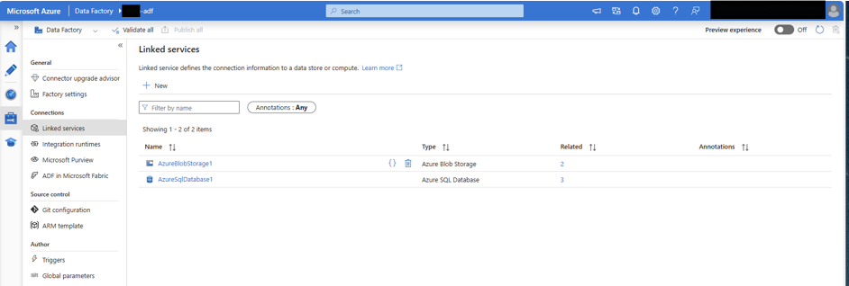
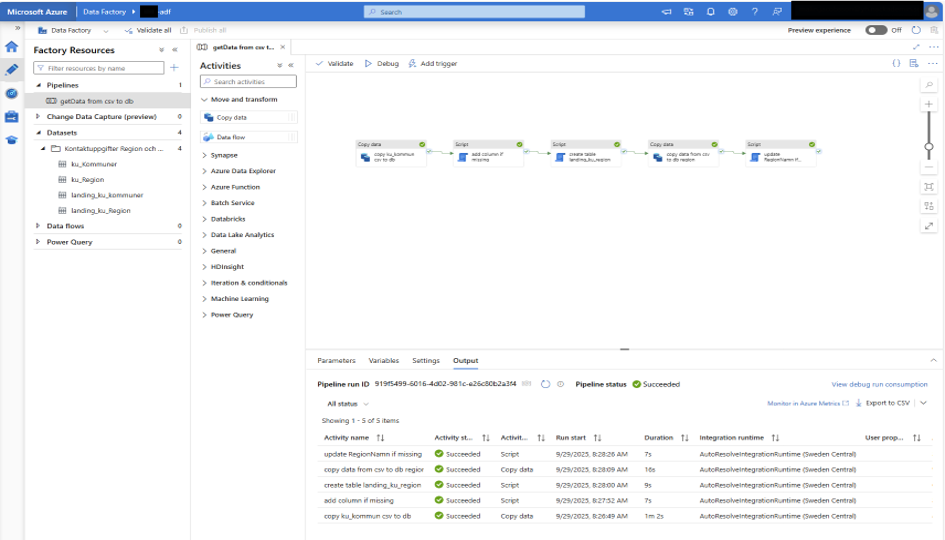
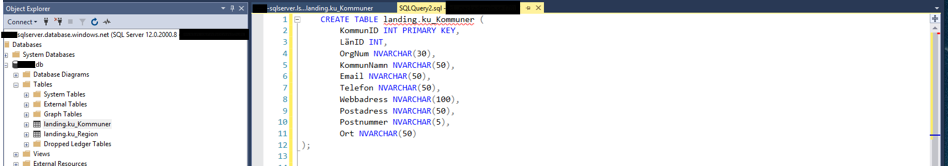
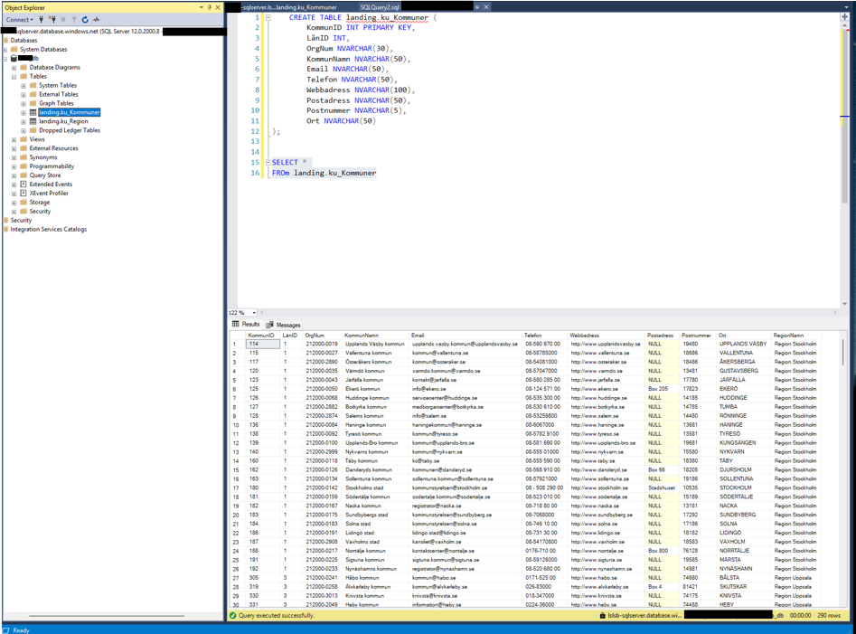
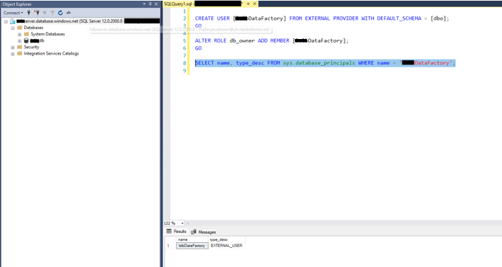

Architecture
Blob Storage (CSV) ──► Azure Data Factory ──► Azure SQL Database
municipalities copy → script → load landing_ku_Kommuner
pipeline landing_ku_Region
Swedish municipality contact data landed in Azure SQL via a multi-activity Data Factory pipeline — deliberately built on the free tier.
What it looks like

Linked services — connections to both Blob Storage and Azure SQL.

Pipeline run — copy, add columns, create table, load region: all activities green.

Landing-zone DDL — KommunID as primary key, NVARCHAR for text fields.

Landed data — Swedish municipalities with contact details and region names.

Security — the Data Factory gets its own external user with db_owner — no shared credentials.
Lessons learned
- Encoding matters. The municipality CSV used ISO-8859-1; without the right encoding setting, Swedish characters (å, ä, ö) broke on load.
- Cost awareness shaped the design — free-tier SQL Database meant small tables, simple pipelines, no unnecessary compute.
- Working end-to-end in a real cloud tenant is different from local scripts: permissions, linked services and activity ordering all have to be right before anything moves.